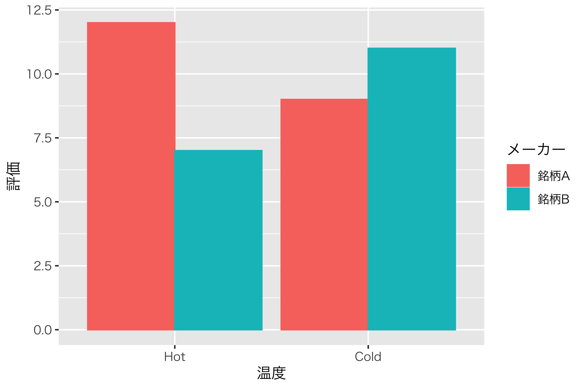
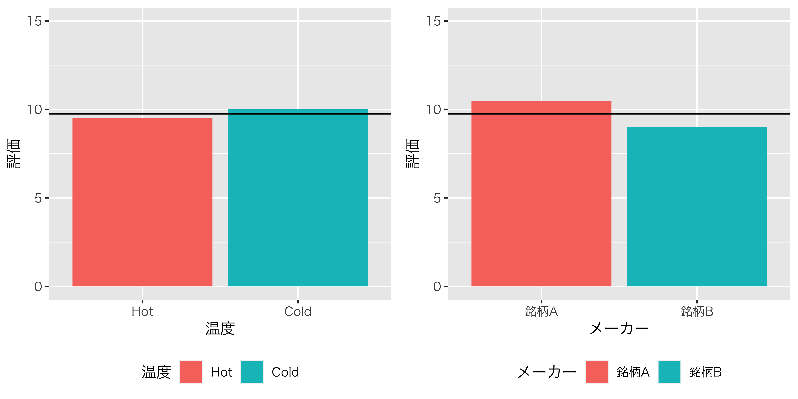
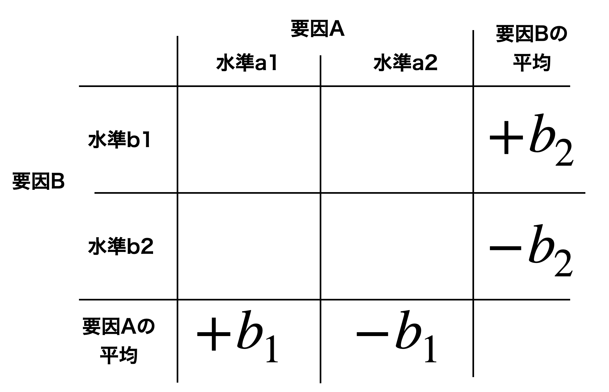
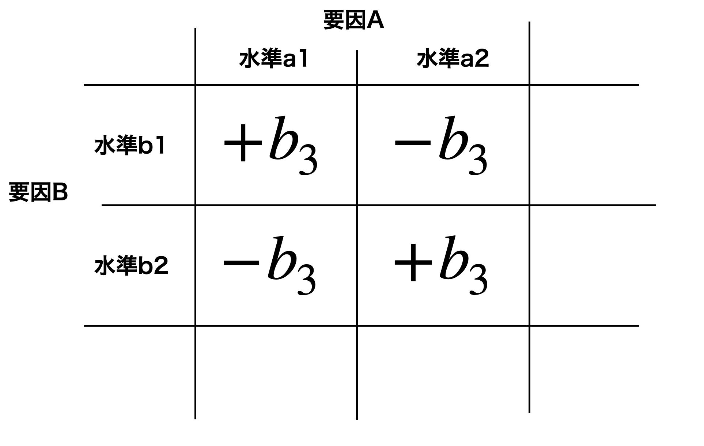

Chapter 5 実験計画法2；Between計画
実験計画について，用語の整理や効果の評価の方法について説明してきました。 ここでは簡単なモデルを使って数理的な説明をし，続いてそのモデルを拡張してく話をしましょう。
5.1 線形モデルによる二要因計画の表現と自由度
実験計画は説明変数が離散変数になっただけで，線形モデルの一種であるというのは前回説明しました。線形モデルで一般的に説明できるということを表して，という言い方をします。 これを少し詳しく見てみましょう。
説明変数が連続変数である，いわゆる回帰分析モデルは，次のような式で表現されるのでした。 \[y_i = b_0 + b_1 x_i + e_i\]
さてここで説明変数\(x_{i}\)が離散変数であるとはどういうことでしょうか。離散変数は尺度水準でいうと名義尺度水準です。例えば統制群に0，実験群に1という数字を割り当てた，といった状態がそうなりますね。例えばID=1の人を統制群としたら\(x_1=0\)ですし，ID=4の人が実験群であれば\(x_4=1\)である，というようになっていればいいのです。こうすると，統制群の回帰モデルは次のようになります。
\[y_i = b_0 + b_1 \times 0 + e_i = b_0 + e_i\] 同様に，実験群の回帰式は次のようになります。
\[y_i = b_0 + b_1 \times 1 + e_i = b_0 + b_1 + e_i\]
どちらの群も\(b_0\)がありますが，これは何も処置をしない群の平均値を意味します。統制群のデータの散らばりは，全て誤差\(e_i\)で説明するモデルということになります。
他方，実験群は，何もしない状態\(b_0\)に加えて\(b_1\)があり，それ以外の変化は誤差\(e_i\)で説明するということになります。ここで効果の大きさ\(b_1\)は添字\(i\)がついていないことを確認しましょう。効果の大きさは，個人ごとに変わるものではないからです。この\(b_1\)の総量が効果の大きさになりますが，比較すべき誤差\(e_i\)の総和はゼロになりますから，そのままでは比較せずに二乗して比較するようになります。
この表現の仕方は，統制群を基本として効果の大きさを見るというもので，比較的わかりやすい表現かと思います。でも水準数が3つになったらどう表したらいいのでしょうか。大丈夫です，このときも基本的に考え方は変わりません。3つの群として前回の例，「水を毎日あげる」「水をときどきあげる」「水をあげない」とあったとしましょう。毎日水をあげる効果を\(b_1\)，時々あげる効果を\(b_2\)，あげない効果を\(b_3\)とします。 そうすると，3つの群のデータはそれぞれ次のように表現できることになります。
\[\label{eq13_01} \begin{cases} y_i = b_0 + b_1 + e_i & \mbox{毎日水をあげる群}\\ y_i = b_0 + b_2 + e_i & \mbox{ときどきあげる群}\\ y_i = b_0 + b_3 + e_i & \mbox{あげない群} \end{cases}\]
ここで\(b_0\)とあるのは，全体平均です。水のあげかたの違いになんの効果もなければ，全て全体平均＋個体差で説明できてしまうはずだからです。よろしいでしょうか。
ちょっとまって！\(x\)が消えちゃったわ，どうなってるの，と思う人もいるかもしれませんね。大丈夫，書いてないだけで隠れているだけです。隠さずに書くとき，\(x\)は\(x=\{0,1\}\)でその項について「該当する/当てはまる/割り当てられている(\(1\))」か「該当しない/当てはまらない/割り当てられていない(\(0\))」かだけを意味するのだ，というルールにします。 例えば\(i\)番目のデータが「毎日水をあげる群」だったとすると，\(x_{i1}=1,x_{i2}=0.x_{i3}=0\)のように表します。すなわち，「水をあげる群」であり(\(1\))，「ときどきあげる群」「あげない群」ではない(\(0\))とするのです。これを踏まえて隠さずに書くと、次のようになります。 \[\label{eq13_01b} \begin{cases} y_i = b_0 + b_1x_{i1} + b_2x_{i2} + b_3x_{i3} + e_i & \mbox{毎日水をあげる群}\\ y_i = b_0 + b_1x_{i1} + b_2x_{i2} + b_3x_{i3} + e_i & \mbox{ときどきあげる群}\\ y_i = b_0 + b_1x_{i1} + b_2x_{i2} + b_3x_{i3} + e_i & \mbox{あげない群} \end{cases}\]
全て同じ式になってしまいましたが，\(x_{ij}\)が群\(j\)に該当するかしないか，1か0かになっているので，0の時はその項が消えてしまっていたんですね。
これについては数字をまとめて表現する，による表現を使うと便利です。\(i\)番目のデータがどの群に割り当てられているかは，\(\bm{x}_i = (1,0,0)\)のように数字のセット，で表現されます。 ベクトルをセットで扱うのがで，これを使うとデータセットは次のように表現できます。 \[\begin{pmatrix} y_1 \\ y_2 \\ \vdots \\ y_n \end{pmatrix} = \begin{pmatrix} b_0 \\ b_0 \\ \vdots \\ b_0 \end{pmatrix} + \begin{pmatrix} b_1 & 0 & 0 \\ 0 & b_2 & 0 \\ \vdots &\vdots & \vdots\\ 0 & 0 & b_3 \end{pmatrix} + \begin{pmatrix} e_1 \\ e_2 \\ \vdots \\ e_n \end{pmatrix}\] ここで右辺の第二項は\(b_{ij}x_{ij}\)を表したものですが，これをこの掛け算の式のまま表現すると，次のように簡単に書くことができます。 \[\begin{pmatrix} y_1 \\ y_2 \\ \vdots \\ y_n \end{pmatrix} = \begin{pmatrix} 1 & 1 & 0 & 0 \\ 1 & 0 & 1 & 0 \\ \vdots & \vdots & \vdots & \vdots \\ 1 & 0 & 0 & 1 \end{pmatrix} \begin{pmatrix} b_0 \\ b_1 \\ b_2 \\ b_3 \end{pmatrix} + \begin{pmatrix} e_1 \\ e_2 \\ \vdots \\ e_n \end{pmatrix}\]
さらに行列やベクトルを記号で置き換えると，\(\bm{y} = \bm{Xb} + \bm{e}\)となり，このとき\(\bm{X}\)のことを(どの要因が割り当てられているかを表している行列という意味で)といいます。
ところで，2水準のときに比べると少し記号が増え過ぎな気がしませんか？ 統制群と実験群だけの2群のときは，統制群が\(b_0\)で実験群が\(b_1\)で，2つだけだったのですが，3水準になると\(b_0,b_1,b_2,b_3\)と4つの係数を考えることになっています。これはオカシイ。
オカシくなった理由は，2水準のときは統制群をベースラインに考えて効果を見たのに，3水準の場合は全体平均を考えているからです。3水準の場合もどこか1つの基準を選んで，例えば「水をあげる群を基準として」考えると，次のように表現が変わります。
\[\begin{cases} y_i = b_1 + e_i & \mbox{毎日水をあげる群}\\ y_i = b_1 + b_2' + e_i & \mbox{ときどきあげる群}\\ y_i = b_1 + b_3' + e_i & \mbox{あげない群} \end{cases}\]
このように考えたときは，\(b_2'\)は\(b_1\)に比べてどれぐらい違ったか(毎日水をあげる群にくらべて，時々あげる群の伸び率はどうか)という表現であり，効果の大きさは水をあげる群の平均から時々あげる群の平均を引き算することで算出するようになります。あげない群の効果も同様に，毎日あげる群に比べてどうか，という考え方です。こうすると，係数は\(b_1,b_2',b_3'\)の3つだけですから，3水準で3つの係数，うん，わかりやすい。
では全体平均から比べたときは，なぜ未知数が1つ増えたのでしょう。実はひとつ，大事な制約が欠けているのです。全体平均からの相対的な大きさで効果を考える場合，「相対的」ですから全体平均を中心にしなければなりません。言い換えるならば，効果だけを足し合わせると総和が0になるような制約が必要なのです。これを式で表現すると次のようになります。
\[b_1 + b_2 + b_3 = 0\]
この式を展開すると次のようになります。 \[b_3 = 0 - (b_1 + b_2) = -b_1 - b_2\] これを踏まえて式\[eq13_01\]を書き直すと，次のようになります。
\[\label{eq13_02} \begin{cases} y_i = b_0 + b_1 + e_i & \mbox{毎日水をあげる群}\\ y_i = b_0 + b_2 + e_i & \mbox{ときどきあげる群}\\ y_i = b_0 - b_1 - b_2 + e_i & \mbox{あげない群} \end{cases}\]
こうすると，モデル式の係数は\(b_0,b_1,b_2\)の3つになり，3水準で係数が3つなので計算が合いますね。 ちなみに2水準のときも全体平均を用いで表現するならば，次のようになります。
\[\begin{cases} y_i = b_0 + b_1 + e_i & \mbox{統制群}\\ y_i = b_0 - b_1 + e_i & \mbox{実験群}\\ \end{cases}\]
このように表記すると，効果\(b_1\)の総和も0，誤差\(e_i\)の総和も0なので，二乗しないと計算できないなあということが理解しやすいかと思います。
何の話かピンとこない，という人もいるかも知れませんね。ここで伝えたかったポイントは，「効果や誤差の大きさは相対的で，正負が同じ大きさだけ出るから足し合わせるとゼロになるから，大きさを評価するには二乗することで符号を消さなければならない」ということと，「効果の大きさを表す係数は，その要因の水準数\(-1\)個しか求められない」ということです。2つ目のポイントは特に，効果を評価するときに確率分布を応用する推測統計学の話に入ったとき，というパラメータに繋がる話なので，先走って解説しておきました。また第\[chapter21\]章あたりで出てくる話になりますので，それまで少し頭の片隅にでも引っ掛けておいていただければと思います。
5.2 二要因の場合
それでは今度は二要因になった群間計画に進んでいきたいと思います。二要因計画とは例えば，次のような実験計画です。
植物の生長を観察するため，水をあげる群とあげない群，肥料をあげる群とあげない群をつくり，成長の程度を比較したい
この例では要因は「水」と「肥料」，水準はそれぞれ「あげる・あげない」なので\(2\times2\)の実験計画というのでした。
アサガオの例のまま進めても良いのですが，もう少し心理学っぽいほうがイメージしやすいかもしれませんので，以下では表1.1のような数値例を使うことにします。
r6cm

2つのメーカーがそれぞれ缶コーヒーを作っていて，ホットコーヒーにした場合，アイスコーヒーにした場合の美味しさを評価してもらいます。各条件に3名ずつ試飲をお願いして，20点満点で評価してもらったら，表1.1のようになりました。これを図示したのが図\[fig::13_01\]にあります。これを見るとわかるように，ホットコーヒーにすると銘柄Aは高い評価，アイスコーヒーだと両者の違いはなくなることがわかります。どうも銘柄Bはホットコーヒーにして売らない方がいいように思いますが，たまたまホットの銘柄Bを飲んだ3人がコーヒーが苦手だったのかもしれなないですね。このような誤差に比べて，温度と銘柄の別の効果はどの程度あるのかを考えていきたいと思います。
| ID | 温度 | メーカー | 評価 |
|---|---|---|---|
| 1 | Hot | 銘柄A | 13 |
| 2 | Hot | 銘柄A | 11 |
| 3 | Hot | 銘柄A | 12 |
| 4 | Hot | 銘柄B | 7 |
| 5 | Hot | 銘柄B | 6 |
| 6 | Hot | 銘柄B | 8 |
| 7 | Cold | 銘柄A | 9 |
| 8 | Cold | 銘柄A | 9 |
| 9 | Cold | 銘柄A | 9 |
| 10 | Cold | 銘柄B | 13 |
| 11 | Cold | 銘柄B | 11 |
| 12 | Cold | 銘柄B | 9 |
\[tbl::13_01\]
さて，一要因の計画も，線形モデルと見ることができるという話をしていました。二要因の計画も当然，同じように線形モデルとして考えることができます。今回は二要因計画です。要因は「温度」と「銘柄」の二種類ありますから，効果として\(b_1\)と\(b_2\)の2つが必要です。これを式に書き入れてみますと，次のようになります。 \[\label{eq13_03} y{i} = b_0 + b_1 X_{i1}+ b_2 X_{i2} + e_{i}\]
ここで左辺の\(y_{i}\)はIDが\(i\)の人の評価で，例えば\(y_1=13,y_2=11,\cdots,y_{12}=9\)ということになります。 \(X_{ij}\)は\(i\)さんが要因\(j\)のときにどちらに割り振られたかを表しているのだと思ってください。\(j=1\)は温度の要因，\(j=2\)は銘柄の要因を表しています。ですから，\(X_{i1}\)は\(i\)さんが温度要因でHot/Coldのどちらを飲んだかを表します。具体的には，\(X_{11}\)はHot条件です。\(X_{71}\) はCold条件です。これは名義尺度水準であり，Hot/Coldになんらかの数字を割り振らなければなりません。数字は何でもいいといえば何でもいいのですが，ここでは数式的にわかりやすくするためにHotに+1を，Coldに-1を割り振ることにします。こうすることで，\(b_1\)が温度効果の大きさを表すことになりますね。Hot/Coldで符号が違って大きさが同じですから，相対的な大きさを表しているだけになるからです27。\(X_{11}=+1,X_{71}=-1\)のような数字が入るものだと思って読み進めてください。同様に，\(X_{i2}\)は銘柄水準の割当を表していて，銘柄Aは+1,銘柄Bは-1を表しています。具体的に書き起こしてみましょう。
\[\label{eq13_04} \left \{ \begin{array}{cccccc} y_1 &=& b_0 + b_1 X_{11} + b_2 X_{12} + e_1 &=& b_0 + b_1 + b_2 + e_1 & \mbox{Hotで銘柄A}\\ \vdots& & \vdots && \vdots & \\ y_4 &=& b_0 + b_1 X_{41} + b_2 X_{42} + e_4 &=& b_0 + b_1 - b_2 + e_4 & \mbox{Hotで銘柄B}\\ \vdots& & \vdots && \vdots & \\ y_7 &=& b_0 + b_1 X_{71} + b_2 X_{72} + e_7 &=& b_0 - b_1 + b_2 + e_7 & \mbox{Coldで銘柄A}\\ \vdots& & \vdots && \vdots &\\ y_{10} &=& b_0 + b_1 X_{10,1} + b_2 X_{10,2} + e_{10} &=& b_0 - b_1 - b_2 + e_{10} & \mbox{Coldで銘柄B}\\ \end{array} \right.\]
ここで\(X_{ij}\)は符号だけを表している名義尺度水準であることを確認しておいてください。
改めて式\[eq13_03\]や式\[eq13_04\]を見ると，これも線形モデル，特に説明変数が複数ある重回帰分析のモデルと同じ形をしているのが分かりますね。重回帰分析は第\[chapter9\]でやりましたが，そのモデル式と同じ形をしているのが確認できると思います。要因計画は線形モデルなのです。
5.3 効果の大きさを算出する
それでは，効果の大きさ，誤差の大きさを見積もってみましょう。二要因の場合でも考え方は同じです。 無作為に割り当てたのですから，人間の手を加えなかったらデータの散らばりの全ては誤差(個体差)です。誤差はキャンセルし合うはずなので，理論的には全て平均値に一致するはずです。
しかし，やれ温度の操作だとか，やれメーカーの違いだとかで人によって違う介入があり，しかも人間のやることですので個人差も加わってしまいました。だからデータがばらついてしまったのだ，と考えるのです。
理想的には全部同じはずと考えると，実験もしなければ個人差もない，理想的なデータの値は全体平均\(\bar{X}_{gm} = 9.75\)にぴったり合致するはずなのでした。しかしそこに温度の効果\(b_1\)が関係してきます。図1.1の左にあるように，温度で群わけしてHot群だけの平均を計算してみましょう。 \[\frac{1}{6} (13+11+12+7+6+8)= 9.5\] 同じく，Cold群だけの平均は次のようになります。 \[\frac{1}{6}(9+9+9+13+11+9) = 10.0\] ここで，群平均-全体平均=効果だと考えられますから，Hot群に割り当てられると\(-0.25\)の効果が，Cold群に割り当てられると\(+0.25\)の効果があったということになります。
同様に，メーカーの効果も考えましょう。温度の効果を潰して(温度の効果で分けずに)銘柄Aのデータだけ取り出して，平均値を計算してみます。 \[\frac{1}{6}(13+11+12+9+9+9) = 10.5\] 同様に，銘柄Bの平均値を計算します。 \[\frac{1}{6}(7+6+8+13+11+9)= 9.0\]
群平均-全体平均=効果ですから，銘柄Aは全体平均より\(10.5-9.75=0.75\)高くなる効果が，相対的に銘柄Bは全体平均より\(0.75\)下がる効果がある(\(-0.75\)あげる効果がある)，ということがわかります。
図1.1に，群ごとに平均値をプロットし，全体平均(9.75)のラインを横一線で引いてみました。これを見ると，各群の効果が全体平均(\(b_0\))を挟んで，相対的に同じ大きさで影響しているのがわかると思います。

群ごとにプロットしたもの。全体平均から見た相対評価になっていることが確認できる。
さて，これらの効果がわかったところで，足し算を組み上げていきましょう。全体平均にそれぞれの効果を加えていきます。銘柄Aをホットコーヒーでいただくとすると，全体平均\(9.75\)にHotの効果があって(\(-0.25\))の銘柄Aの効果(\(+0.75\))も入りますから，\(9.75-0.25+0.75=10.25\)となり，これが銘柄Aをホットで飲んだ時の平均値になるのです。
\[\frac{1}{3}(13+11+12)=12\]
あれ？ なりませんでした。
5.4 交互作用の出現
実は，同様のことは他の組み合わせのところでも生じます。群平均からの差分が誤差なのだ，と考えれば良いはずですが，群平均が理論通りにならないのです。具体的に，表\[tbl::13_02\]に計算してみました。効果の総和と群平均，理論的には合致するはずです。これはどうしたことでしょう。
rrrccr 全体平均 & 温度の効果 & メーカーの効果 & 効果を足し合わせると &
群平均は & 評価
& -0.25 & +0.75 & 10.25 & & 13
9.75 & -0.25 & +0.75 & & & 11
9.75 & -0.25 & +0.75 & & & 12
& -0.25 & -0.75 & 8.75 & & 7
9.75 & -0.25 & -0.75 & & & 6
9.75 & -0.25 & -0.75 & & & 8
& +0.25 & +0.75 & 10.75 & & 9
9.75 & +0.25 & +0.75 & & & 9
9.75 & +0.25 & +0.75 & & & 9
& +0.25 & -0.75 & 9.25 & & 13
9.75 & +0.25 & -0.75 & & & 11
9.75 & +0.25 & -0.75 & & & 9
\[tbl::13_02\]
銘柄A(\(+0.75\))のホットコーヒー(\(-0.25\))が10.25で，群平均が12.0ということは，\(12.0-10.25=+1.75\)の差分があります。これも実は，考慮すべき効果のひとつなのです。これは「Aをホットで」という組み合わせの時にのみ生じる組み合わせの効果で，特にといいます28。
交互作用とはこのように，水準同士の組み合わせによって生じる特別な効果のことを指します。交互作用に対して，これまでみてきた群の平均はと呼んで区別します。式\[eq13_03\]にあった線形モデルは，次の式\[eq13_04\]のように交互作用項も含めたものにアップデートしなければなりません。
\[\label{eq13_04} y_i = b_0 + b_1 X_{i1}+ b_2 X_{i2} + b_3 X_{i3} + e_{i}\]
この交互作用は，式\[eq13_04\]にもあるように，主効果とは別の独立した影響源です。ですから，主効果がなくても，交互作用だけある，ということがあり得ます。今回の例で言えば，温度の違いや銘柄の違いははっきりしないが，銘柄Bは温めるととんでもなくうまくなる，といった場合ですね。
つまり，交互作用はいわば「ただしイケメンに限る」という条件のようなものです。かっこいいセリフや仕草は，それぞれに評価を上げる効果がなくとも(あってもいいんですが)，イケメンがするから特に良いのであって，イケメンでない人がするとむしろ逆効果，ということもあるのでそれを考慮しておこう，ということです29。
さて，この組み合わせの効果も相対的なもので，全部足し合わせると\(0\)になるようにしなければなりません。相対的に評価する，というのは効果をただ足し合わせると\(0\)になるということだからです。他の交互作用の大きさを計算して確かめてみましょう。
銘柄A(\(+0.75\))のCold条件(\(-0.25\))の効果が全体平均に加わると\(8.75\)で，群平均が\(7.0\)ですから，ここには\(-1.75\)の交互作用効果が出ています。同様に銘柄BのHot条件には\(-1.75\)，銘柄BのCold条件には\(+1.75\)ですから，4つの要素を足すとキャンセルしあって合計\(0\)になっていますね。これを踏まえて，式\[eq13_04\]をアップデートしましょう。
\[\label{eq13_05} \left\{ \begin{array}{cccccc} y_1 &=& b_0 + b_1 X_{11} + b_2 X_{12} + b_3 X_{13}+ e_1 &= &b_0 + b_1 + b_2 + b_3 + e_1 & \mbox{Hotで銘柄A}\\ \vdots& \vdots & \vdots \\ y_4 &=& b_0 + b_1 X_{41} + b_2 X_{42} + b_3 X_{43}+ e_4 &= &b_0 + b_1 - b_2 - b_3 + e_4 & \mbox{Hotで銘柄B}\\ \vdots &\vdots & \vdots \\ y_7 &=& b_0 + b_1 X_{71} + b_2 X_{72} + b_3 X_{73}+ e_7&=& b_0 - b_1 + b_2 - b_3 + e_7 & \mbox{Coldで銘柄A}\\ \vdots &\vdots & \vdots \\ y_{10} &=& b_0 + b_1 X_{10,1} + b_2 X_{10,2} + b_3 X_{10,3}+ e_{10} &=& b_0 - b_1 - b_2+ b_3 + e_{10} & \mbox{Coldで銘柄B}\\ \end{array} \right .\]
交互作用項(\(b_3\))のもつ符号は，プラスとマイナスが上から順に\(+,-,-,+\)となっています。どうしてこういうことになっているのかについて，説明を追加しておきましょう。
今回は\(2\times2\)の計画ですから，図\[fig::13_03\]にあるように組み合わせの表を書いてみると，主効果はその周辺の平均値で考えていたことがわかります。例えば1つ目の要因である温度(図中では要因Aとします)の，「Hot(水準a1)」か「Cold(水準b1)」かの話は，もう1つの要因であるメーカーを潰して，列方向に1つのグループにした平均からその効果を計算していました(\(b_1\))。この水準同士の比較は相対的なので，水準1と2は符号違いで\(+b_1,-b_1\)になっています。同様に，2つ目の要因である銘柄(図中では要因Bとします)についても，要因Aの水準を潰して行方向に1つのグループと考え，平均を出して効果を算出し，相対比較にしていました(\(+b_2,-b_2\))。
これに対して，交互作用はセル内，各組み合わせについて生じている効果です。行方向，列方向についてはそれぞれの要因の主効果として計算されていますから，交互作用は行方向に足し合わせても\(\pm 0\)，列方向に足しあわせても\(\pm 0\)になる必要があります。そうでないと，周辺の計算が合わなくなってしまうからです。図1.3の左上，a1b1水準に交互作用効果\(b_3\)が生じたとすると，列方向，つまり同じ水準a1のなかで，総和がゼロにならないといけませんから，a1b2水準には\(-b_3\)が入ることになります。これはまた，行方向にも総和がゼロでなければなりませんから，a2b1も\(-b_3\)である必要があります。残る右下のa2b2は，行方向にも列方向にも総和ゼロにするためには\(+b_3\)でなければなりません。このようにして，交互作用の符号は周りとの関係で定まっていたのです。交互作用の大きさは，どの行方向，列方向をみても総和ゼロになっている，というのは水準数が増えても同じです。
 |
 |
このように交互作用を含めて計算すると，組み合わせ水準のところまで含めて，群平均の計算が合うようになります。それでも一人ひとりのレベルまで考えてみると，やはりズレが出てしまいますが，これはどうしようもない個人差＝誤差ですので，これを計算することで誤差を算出できます。
| 全体平均 | 温度の効果 | 銘柄の効果 | 交互作用 | 誤差 | 評価 |
|---|---|---|---|---|---|
| 9.75 | -0.25 | +0.75 | +1.75 | +1.00 | 13 |
| 9.75 | -0.25 | +0.75 | +1.75 | -1.00 | 11 |
| 9.75 | -0.25 | +0.75 | +1.75 | 0.00 | 12 |
| 9.75 | -0.25 | -0.75 | -1.75 | 0.00 | 7 |
| 9.75 | -0.25 | -0.75 | -1.75 | -1.00 | 6 |
| 9.75 | -0.25 | -0.75 | -1.75 | +1.00 | 8 |
| 9.75 | +0.25 | +0.75 | -1.75 | 0.00 | 9 |
| 9.75 | +0.25 | +0.75 | -1.75 | 0.00 | 9 |
| 9.75 | +0.25 | +0.75 | -1.75 | 0.00 | 9 |
| 9.75 | +0.25 | -0.75 | +1.75 | +2.00 | 13 |
| 9.75 | +0.25 | -0.75 | +1.75 | 0.00 | 11 |
| 9.75 | +0.25 | -0.75 | +1.75 | -2.00 | 9 |
| 平方和 | 0.75 | 6.75 | 36.75 | 12.00 | 56.25 |
\[tbl::13_04\]
表1.2には，それぞれの効果の大きさと，それを二乗して足したものを書きました。二乗して足し合わせたものは特にといいます。これはもちろん，大きさを比較するために幅の計算にするためです。評価の列にも平方和がありますが，これは各評価と全体平均の差の平方和になっています。評価の平方和はデータ全体のばらつきを表していますが，この全体平方和＝温度効果の平方和＋銘柄の平方和＋交互作用の平方和＋誤差の平方和となっているのがわかります(\(56.25=0.75+6.75+36.75+12.00\)です)。2要因計画の場合も，交互作用を考慮して，データの散らばりを足し算の形に分解できました。
ところで今回，要因の組み合わせによる影響，つまり交互作用を考えようという話でした。今回は2要因の例でしたが，3要因になるとさらにその組み合わせは増えます。下に要因計画ごとの要素の組み合わせを書いてみました。 \[\begin{array}{llll} \mbox{一要因群間計画} & \mbox{全体変動} &=& \mbox{要因A} + \mbox{誤差} \\ \mbox{一要因群内計画} & \mbox{全体変動} &=& \mbox{要因A} + \mbox{個人差} + \mbox{誤差}\\ \mbox{二要因群間計画} & \mbox{全体変動} &=& \mbox{要因A} + \mbox{要因B} +\mbox{交互作用AB} +\mbox{誤差}\\ \mbox{三要因群間計画} & \mbox{全体変動} &=& \mbox{要因A} + \mbox{要因B} + \mbox{要因C}+\mbox{交互作用AB} +\mbox{交互作用AC}+\mbox{交互作用BC} \\ &&&+\mbox{交互作用ABC} +\mbox{誤差}\\ \mbox{四要因群間計画} & \mbox{全体変動} &=& \mbox{要因A} + \mbox{要因B} + \mbox{要因C} + \mbox{要因D}\\ &&& + \mbox{交互作用AB} +\mbox{交互作用AC} +\mbox{交互作用AD}+\mbox{交互作用BC}\\ &&& +\mbox{交互作用BD} +\mbox{交互作用CD}+\mbox{交互作用ABC}+\mbox{交互作用ABD}\\ &&& +\mbox{交互作用BCD} +\mbox{交互作用ABCD} +\mbox{誤差}\\ \end{array}\] 3要因になると，3つの主効果(効果A,B,C)に加え，組み合わせの効果がAB,AC,BCの一次の交互作用だけでなく，ABC3つ揃った時の二次の交互作用も考える必要があります。4要因についても書いてみましたが，もう訳が分からないレベルです。
このことからわかるように，要因計画はいくらでも複雑にしても良い，というものではありません。要因が増えるごとに考えるべき要素が増えるだけであり，結局統一的な解釈が難しくなります。お勧めとしては，交互作用のないような現象について，二要因までの研究計画にしておいた方が良いように思います。
5.5 課題
間(2)\(\times\)間(2)の実験計画で，各セルn人になるように配置してとある課題をやってもらったとします。二つの要因をそれぞれA,Bとし，Aの第一水準を\(a_1\)のように表記することにします。
\(a_1b_1\)の条件での平均点は65点， \(a_1b_2\)の条件での平均点は45点， \(a_2b_1\)の条件での平均点は41点， \(a_2b_2\)の条件での平均点は49点でした。
この時，次の大きさを算出してください。効果の大きさは群平均と全体平均の差で表現できます。
全体平均(Grand Mean, GM)
要因Aの効果の大きさ(\(|b_1|\))
要因Bの効果の大きさ(\(|b_2|\))
交互作用ABの効果の大きさ(\(|b_3|\))
なお，水準の組み合わせごとの平均を表にしたものが表1.3です。参考にしてください。
| \(a_1\) | \(a_2\) | ||
|---|---|---|---|
| \(b_1\) | 65 | 41 | \(+b_2\) |
| \(b_2\) | 45 | 49 | \(-b_2\) |
| \(+b_1\) | \(-b_1\) | GM |
\[tbl::13_05\]
もう1つは「説明する」です。↩︎
なんで\(b\)なんだ\(a\)でもいいじゃないか，と言われたら返す言葉もないのですが，慣例的に\(b\)で係数を表しています。ちなみに今はアルファベットの\(b\)ですが，後期になると\(b\)のギリシア文字\(\beta\)に変わります。ギリシア文字で表現するのは推測統計学的な推定に関わるようになってからです。↩︎
親の身長から子供の身長を予測することを考えてみてください。次にその子が親になって，その子がまた親になって・・・という時に，「背の高い親からは背の高い子しかうまれない」というルールであれば，世界はものすごく高身長なひとと低身長な人に二分されてしまいます。そうではないということは，背の高い親から背の低い子が生まれることもあるし，その逆もあるということです。また野球選手などでルーキーのときは成績がいいのに，2年目になったら成績が下がる，というのは2年目のジンクスなどといわれますが，その人の平均的な能力以上のスコアが出た次の年に，平均的な値に帰るために低くなりがちなことは，当然ありえることでもあるのです。こうした効果のことを回帰効果といいます。↩︎